America’s major cities showcase a rich blend of culture, history, and innovation, from the iconic skylines of New York City, Los Angeles, and Chicago to the heritage of Boston, the influence of Washington, D.C., and the distinct character of Miami, New Orleans, Seattle, and Phoenix. Together, they offer diverse experiences that reflect the creativity, resilience, and cultural identity at the heart of the American story.


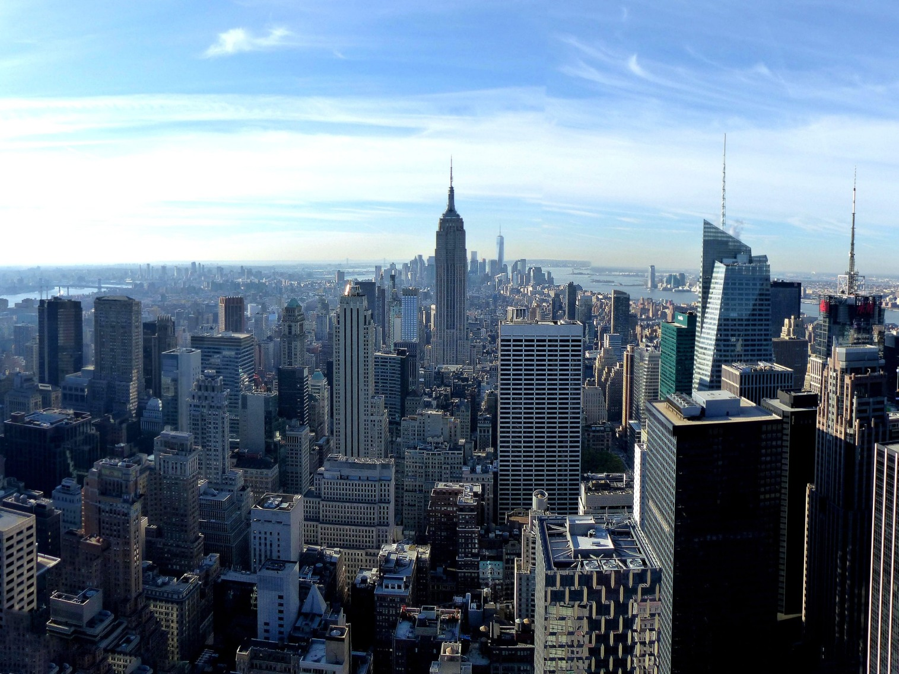
Ship moored at Mystic Seaport
Mystic, Connecticut
New York City
The most populous city in the United States, described as the cultural, financial, and media capital of the world, significantly influencing commerce, entertainment, research, technology, education, politics, tourism, art, fashion, and sports, and is the most photographed city in the world.
Top Sites: Statue of Liberty, Empire State Building, Central Park, Times Square, Broadway, and the Metropolitan Museum of Art.
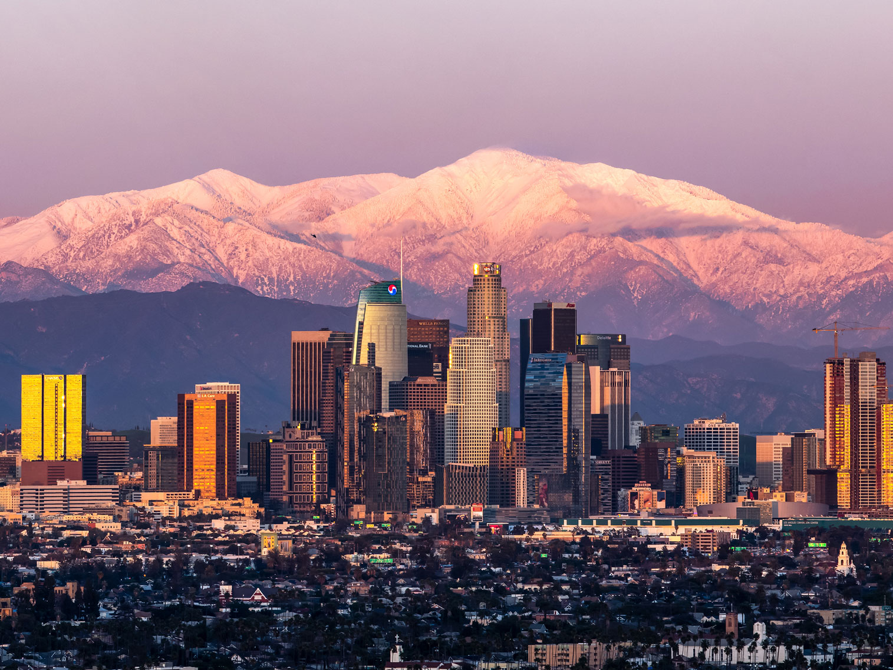
Bass Harbor Head Light
Acadia National Park
Los Angeles
Largest city in California and the second most populous city in the United States is known for its Mediterranean climate, ethnic diversity, Hollywood entertainment industry, and its sprawling metropolis.
Top Sites: Hollywood Sign, Griffith Observatory, Getty Center, Santa Monica Pier, Venice Beach, and Universal Studios Hollywood.

Boston skyline from Longfellow Bridge
Chicago
Most populous city in Illinois, and the third most populous city in the United States, and is one of the 40 largest urban areas in the world.
Top Sites: Millennium Park, Navy Pier, Art Institute of Chicago, Willis Tower Skydeck, and the Magnificent Mile.
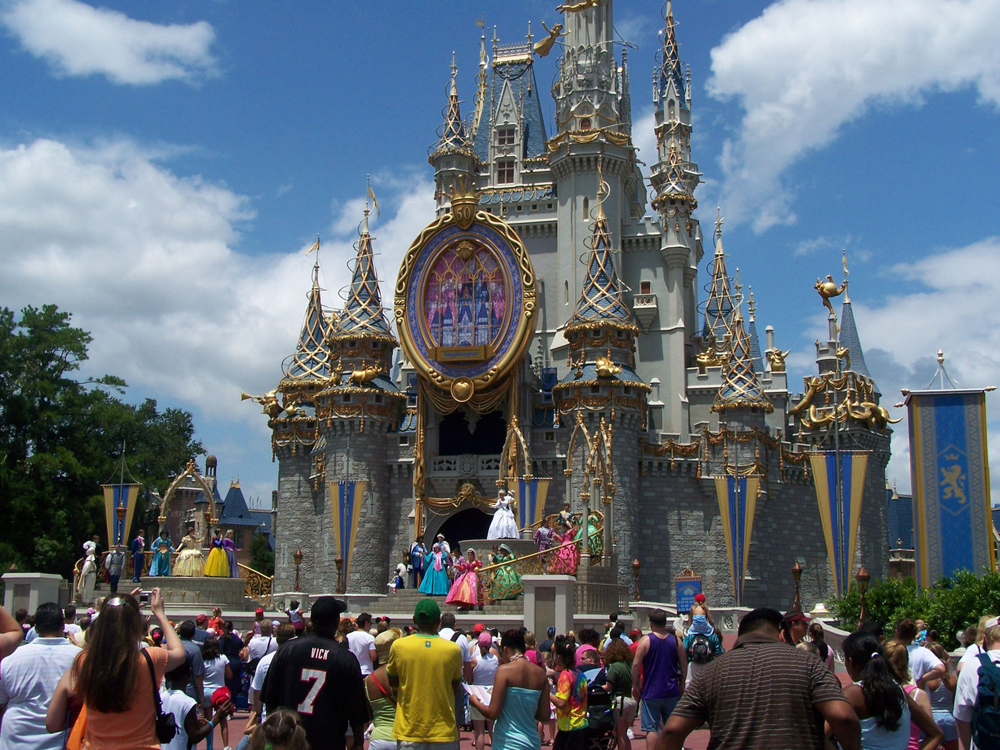
Mount Washington Cog Railway
Orlando
City in Central Florida is one of the most-visited cities in the world primarily driven by tourism, major events, and convention traffic, with the two largest and most internationally renowned tourist attractions Walt Disney World Resort and the Universal Orlando Resort.
Top Sites: Walt Disney World Resort, Universal Orlando Resort, SeaWorld Orlando, ICON Park, and Kennedy Space Center Visitor Complex.
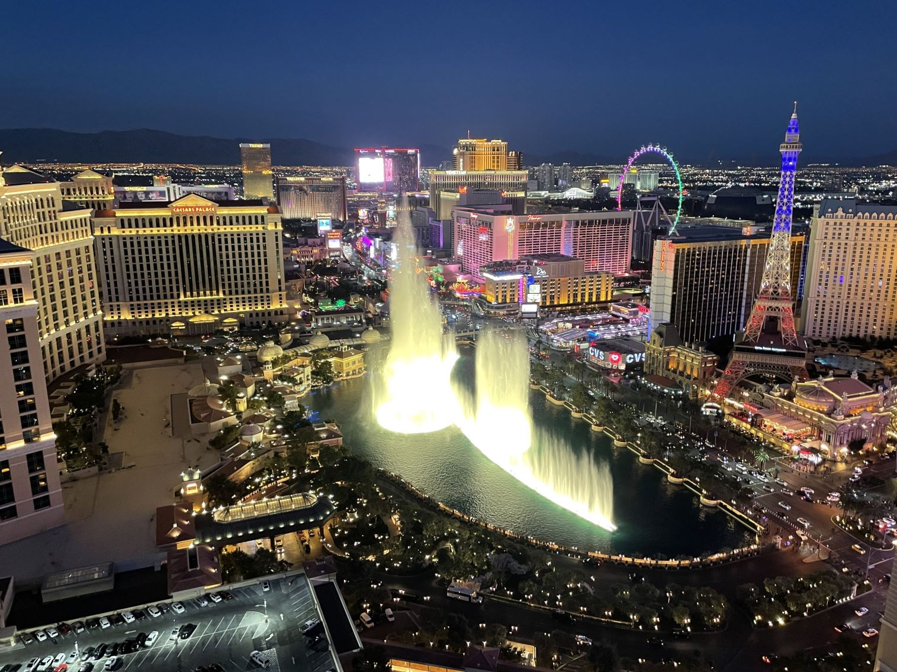
Newport Cliff Walk
Newport, Rhode Island
Las Vegas
Internationally renowned major resort city, known primarily for its gambling, shopping, fine dining, entertainment, and nightlife.
Top Sites: The Strip, Bellagio Fountains, Fremont Street Experience, High Roller Observation Wheel, and Red Rock Canyon National Conservation Area.
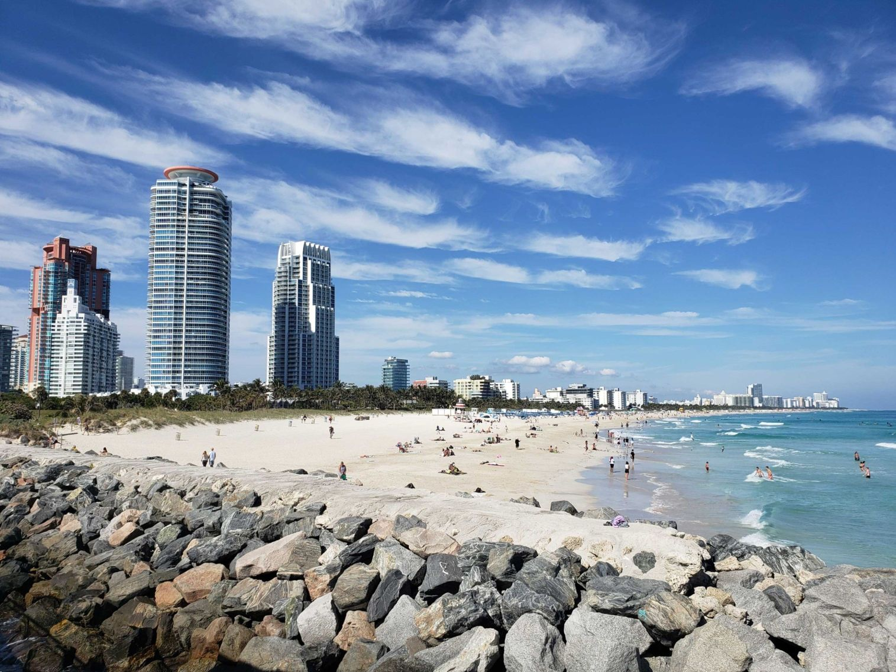
View north along Sky Line Drive on Equinox Mountain
Manchester, Vermont
Miami
Metropolis located in southeastern Florida is a major tourism hub due its beaches, warm and mild climate all year, and the city's frequent portrayal in music, film, and popular culture has made the city and its landmarks recognizable worldwide, ranking it second in the country after New York City
Top Sites: South Beach, Vizcaya Museum and Gardens, Wynwood Walls, Little Havana, and Bayside Marketplace and Park.
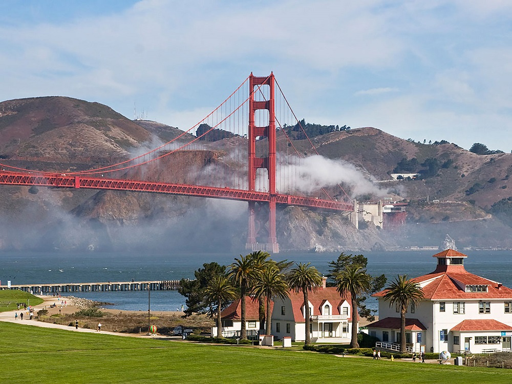
View north along Sky Line Drive on Equinox Mountain
Manchester, Vermont
San Francisco
San Francisco is the cultural, commercial, and financial center in Northern California and a popular tourist destination, known for its cool summers, fog, steep rolling hills, eclectic mix of architecture, and landmarks, including the Golden Gate Bridge.
Top Sites: Golden Gate Bridge, Alcatraz Island, Fisherman's Wharf, Chinatown, and Lombard Street.
Washington, D.C.
The capital city of the United States of America and is one of the most visited cities in the US.
Top Sites: White House, National Mall, Lincoln Memorial, Smithsonian Museums, and United States Capitol.
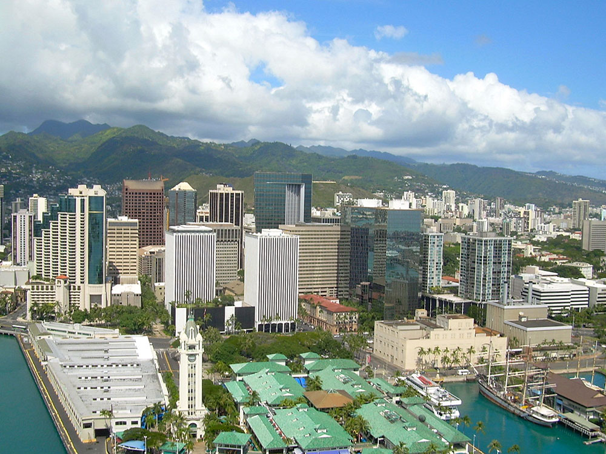
View north along Sky Line Drive on Equinox Mountain
Manchester, Vermont
Honolulu
Urban center featuring a tropical climate, coastal plains, volcanic ridges, and a blend of cultural institutions, historic landmarks, and modern infrastructure.
Top Sites: Waikiki Beach, Pearl Harbor, Diamond Head State Monument, Iolani Palace, and Hanauma Bay Nature Preserve.
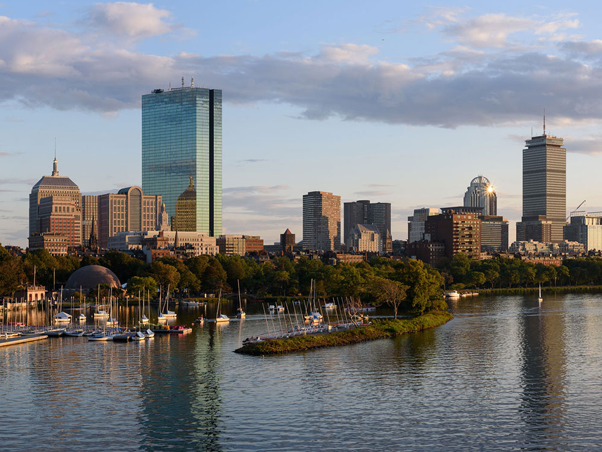
View north along Sky Line Drive on Equinox Mountain
Manchester, Vermont
Boston
Capital and most populous city of Massachusetts is one of the oldest municipalities in the United States and the scene of several key events of the American Revolution.
Top Sites: Freedom Trail, Boston Tea Party Ships and Museum, USS Constitution, Harvard University, and MIT.
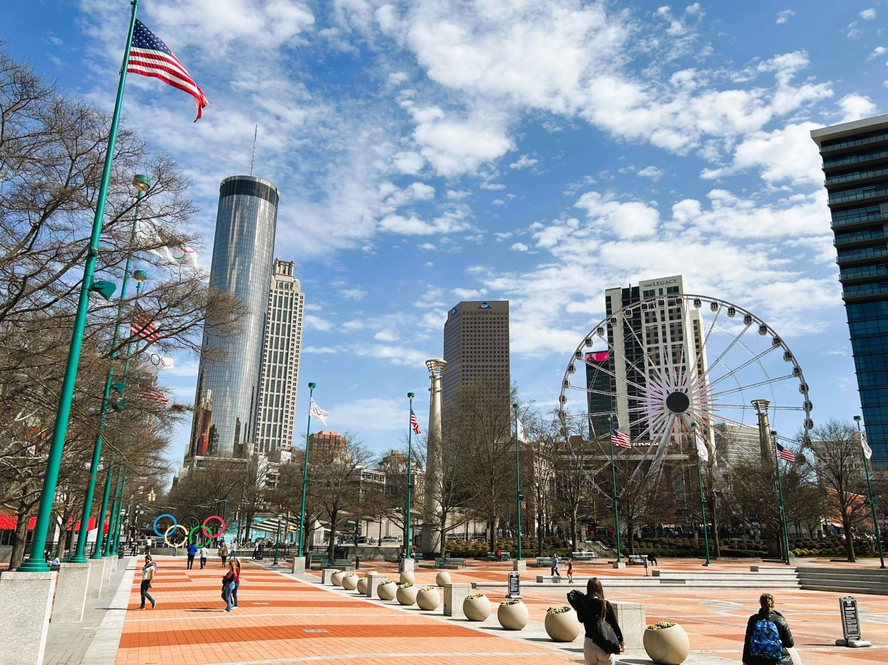
View north along Sky Line Drive on Equinox Mountain
Manchester, Vermont
Atlanta
Major transportation and media hub distinguished by civil rights landmarks, a vast urban tree canopy, a thriving film scene, and one of the world’s busiest airports.
Top Sites: World of Coca-Cola, Georgia Aquarium, Martin Luther King Jr. National Historical Park, and Centers For Disease Control And Prevention Visitor Center.
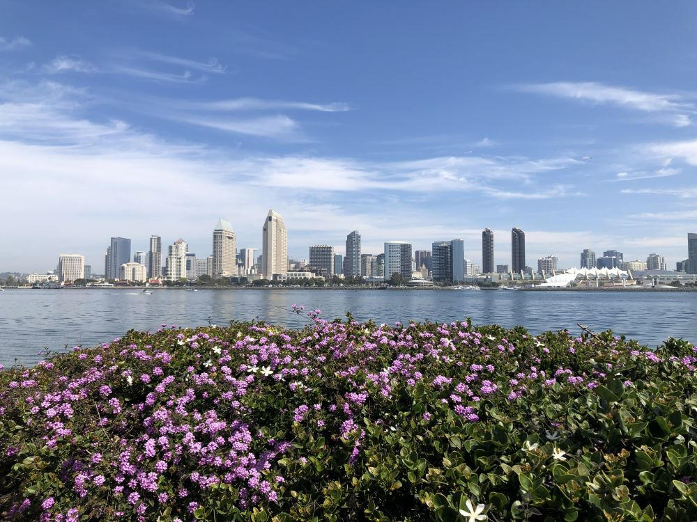
View north along Sky Line Drive on Equinox Mountain
Manchester, Vermont
San Diego
Second most populous city in California, is known for its mild year-round climate, natural deep-water harbor, extensive beaches and parks, and long association with the United States Navy and Marine Corps.
Top Sites: Balboa Park, San Diego Zoo, USS Midway Museum, and La Jolla Cove.
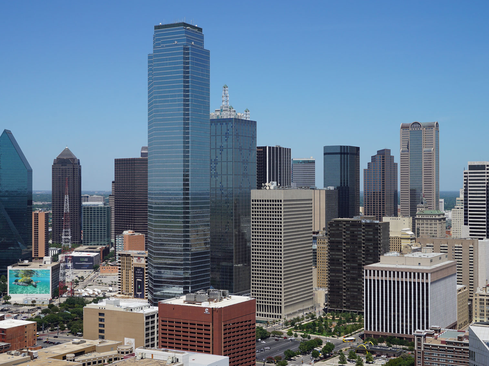
View north along Sky Line Drive on Equinox Mountain
Manchester, Vermont
Dallas
Bustling metropolitan hub featuring a dynamic arts scene, diverse culinary offerings, and world-class sports and entertainment venues.
Top Sites: The Sixth Floor Museum, Reunion Tower, Dallas World Trade Center, Perot Museum of Nature and Science, and Fair Park.
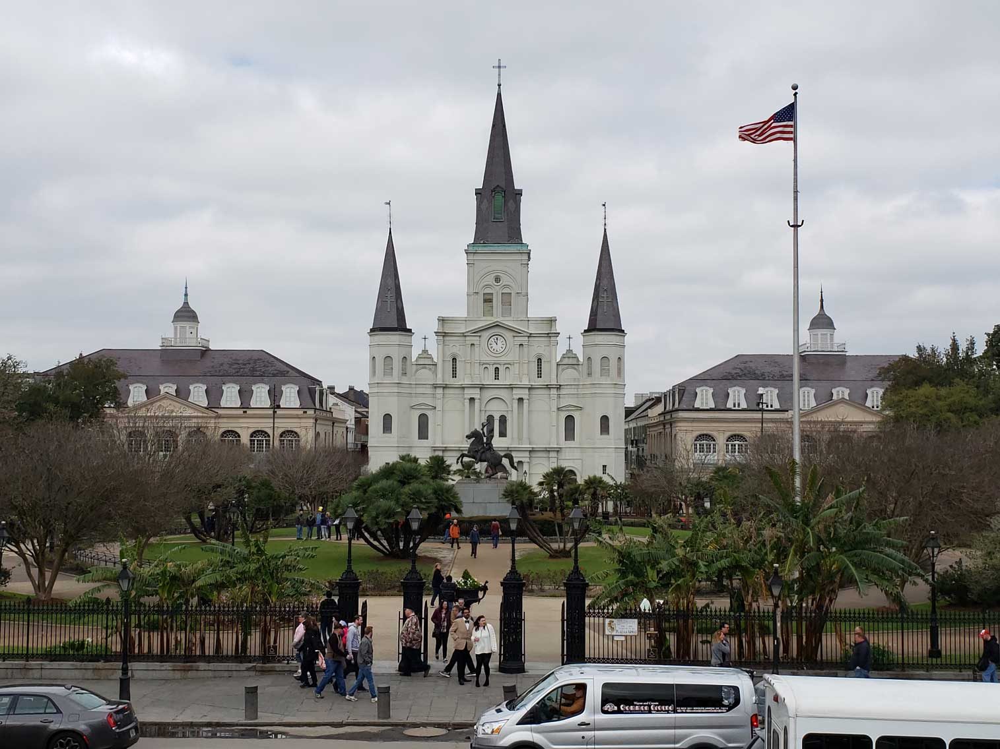
View north along Sky Line Drive on Equinox Mountain
Manchester, Vermont
New Orleans
City located along the Mississippi River in the southeastern region of Louisiana is the most populous city in Louisiana and is world-renowned for its distinctive music, Creole cuisine, unique dialects, and its annual celebrations and festivals, most notably Mardi Gras.
Top Sites: French Quarter, Bourbon Street, Jackson Square, St. Louis Cathedral, and Garden District.
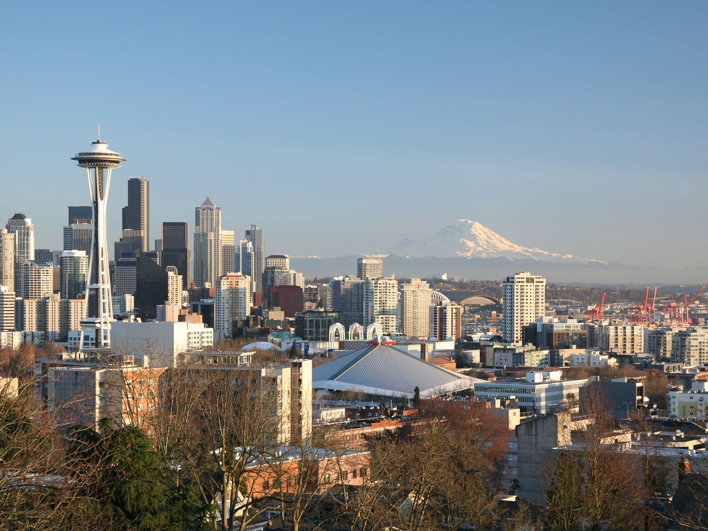
View north along Sky Line Drive on Equinox Mountain
Manchester, Vermont
Seattle
Seaport city on the West Coast of the United States is the largest city in both the state of Washington and the Pacific Northwest region of North America.
Top Sites: Space Needle, Pike Place Market, Chihuly Garden and Glass, Museum of Pop Culture, and Seattle Art Museum.
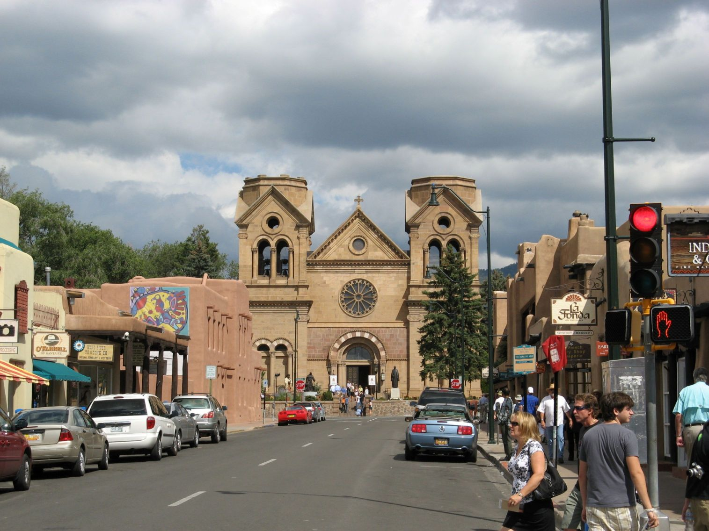
St. Francis Cathedral, Santa Fe, NM
Jllm06, CC BY-SA 4.0, via Wikimedia Commons

Santa Fe
Capital of New Mexico and founded in 1610 as the capital of Nuevo México, making it the oldest state capital in the US, it is also the state capital with the highest elevation and considered one of the world's great art cities, due to its many art galleries and installations.
Top Sites: Santa Fe Plaza, Loretto Chapel, Georgia O'Keeffe Museum, Canyon Road, and Palace of the Governors.
Philadelphia
Sixth-most populous city in the US and second-most populous city in the Northeastern US played an instrumental role in the American Revolution as a meeting place for the Founding Fathers, who signed the Declaration of Independence and the Constitution.
Top Sites: Independence Hall, Liberty Bell, Philadelphia Museum of Art, Reading Terminal Market, and Eastern State Penitentiary.
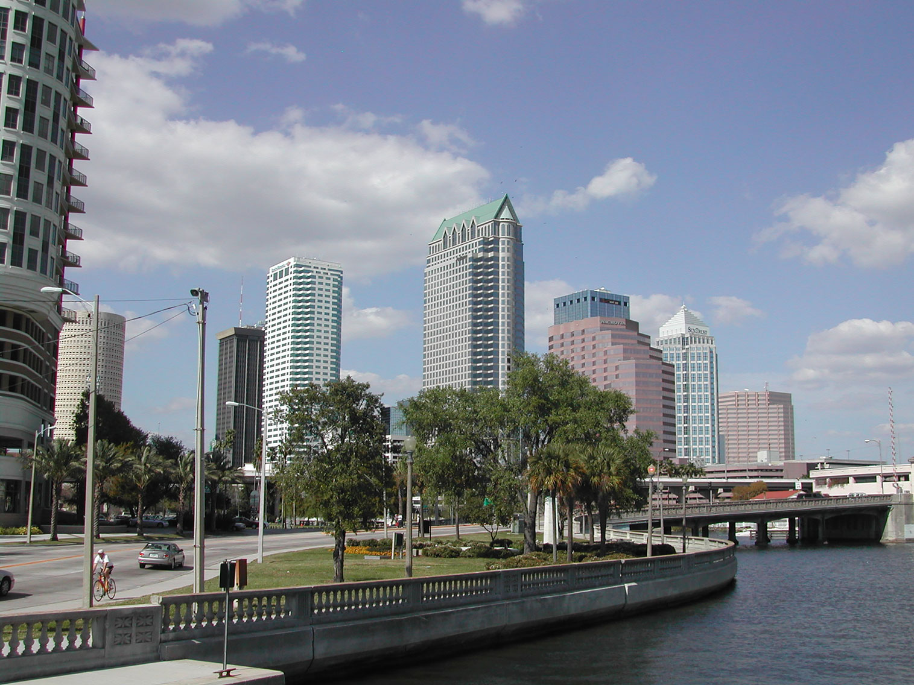
user:Tampa Gator at en.wikipedia, Public domain, via Wikimedia Commons; Image Size Adjusted

Tampa
Major city on the Gulf Coast of Florida, sitting on Tampa Bay as the largest city in the Tampa Bay area, and is the third-most populated city in Florida.
Top Sites: Tampa Riverwalk, Busch Gardens Tampa Bay, Ybor City, Tampa Museum of Art, and Florida Aquarium.
Austin
Capital city of Texas and one of the fastest growing large cities in the United States since 2010, is located in Central Texas within the greater Texas Hill Country, and is home to numerous lakes, rivers, and waterways and known as "The Live Music Capital of the World".
Top Sites: Texas State Capitol, Barton Springs Pool, Zilker Metropolitan Park, Lady Bird Lake Hike and Bike Trail, and South Congress Avenue.
Houston
Thriving urban center renowned for its cutting-edge medical research, vibrant cultural institutions, and diverse culinary traditions.
Top Sites: Houston Museum of Natural Science, Space Center Houston, Houston Zoo, Museum of Fine Arts, and Buffalo Bayou Park.
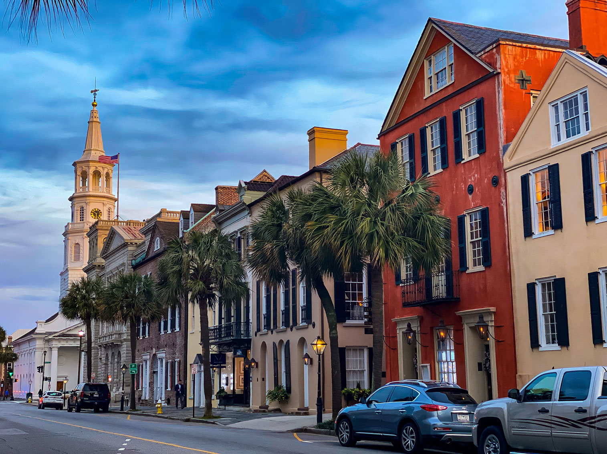
Photo by Leonel Heisenberg on Unsplash; Image Size Adjusted
Charleston
Charming coastal destination known for its well-preserved historic architecture, vibrant culinary scene, and picturesque waterfront views.
Top Sites: Charleston City Market, Battery, Rainbow Row, Fort Sumter National Monument, and Magnolia Plantation and Gardens.
Savannah
Oldest city in Georgia established in 1733 on the Savannah River attracts millions of visitors to its cobblestone streets, parks, and notable historic buildings.
Top Sites: Forsyth Park, Savannah Riverwalk, Telfair Museums, Owens-Thomas House, and the Savannah Historic District.
San Antonio
City in south-central Texas with a rich colonial heritage. The Alamo, an 18th-century Spanish mission preserved as a museum, marks an infamous 1836 battle for Texan independence from Mexico. San Antonio's River Walk, a network of walkways along the banks of the San Antonio River, is lined with cafes and shops.
Top Sites: The Alamo, San Antonio River Walk, Pearl Brewery, San Antonio Missions National Historical Park, and Market Square.
Minneapolis
Most populous city in Minnesota lying along both banks of the Mississippi River, just north of its confluence with the Minnesota River, and adjoins Saint Paul, the state's capital with one of the nation's best park systems, the city is abundant in water, with thirteen lakes, wetlands, creeks, and waterfalls.
Top Sites: Minneapolis Institute of Art, Minnehaha Falls, Lake of the Isles, and The Mall of America.
Nashville
Capital of the U.S. state of Tennessee. Legendary country music venues include the Grand Ole Opry House, home of the famous "Grand Ole Opry" stage and radio show. The Country Music Hall of Fame and Museum and historic Ryman Auditorium are Downtown, as is the District, featuring honky-tonks with live music and the Johnny Cash Museum, celebrating the singer's life.
Top Sites: The Grand Ole Opry, Country Music Hall of Fame and Museum, Ryman Auditorium, and the Johnny Cash Museum.
Memphis
City on the Mississippi River in southwest Tennessee, famous for the influential strains of blues, soul and rock 'n' roll that originated there. Elvis Presley, B.B. King and Johnny Cash recorded albums at the legendary Sun Studio, and Presley's Graceland mansion is a popular attraction. Other music landmarks include the Rock 'n' Soul Museum, Blues Hall of Fame and Stax Museum of American Soul Music.
Top Sites: Graceland, Beale Street, Sun Studio, Stax Museum of American Soul Music, and Memphis Zoo.
Portland
Largest and most populous city in Oregon and a major port in the Willamette Valley region of the Pacific Northwest, at the confluence of the Willamette and Columbia rivers in Northwestern Oregon and has earned a reputation as a bastion of counter-culture.
Top Sites: International Rose Test Garden, Powell's City of Books, Portland Japanese Garden, Pittock Mansion, and Lan Su Chinese Garden.
Phoenix
Capital and most populous city in Arizona, is also the fifth-most populous city in the United States and is the largest state capital by population.
Top Sites: Desert Botanical Garden, Camelback Mountain, Heard Museum, South Mountain Park, and Phoenix Art Museum.
This article uses material from the Wikipedia articles and official tourism pages for major United States cities, which are released under the Creative Commons Attribution-Share-Alike License 3.0.